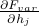
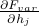

Probe Fields
In this section, we'll learn about a cute trick we can do to find the magnetization density  just by taking a derivative of the free energy. This way we won't have to take a nasty sum over states each time we want to calculate it! Also, we'll see that quantities such as  are still useeful, even though the variational principle didn't guarantee us anything about derivatives of
just by taking a derivative of the free energy. This way we won't have to take a nasty sum over states each time we want to calculate it! Also, we'll see that quantities such as  are still useeful, even though the variational principle didn't guarantee us anything about derivatives of  .
.
In retrospect, I'm a bit confused why we chose to talk about this at all, because it doesn't seem to relate too much to the rest of what we're doing.
Leave a Comment Below!
Comment Box is loading comments...